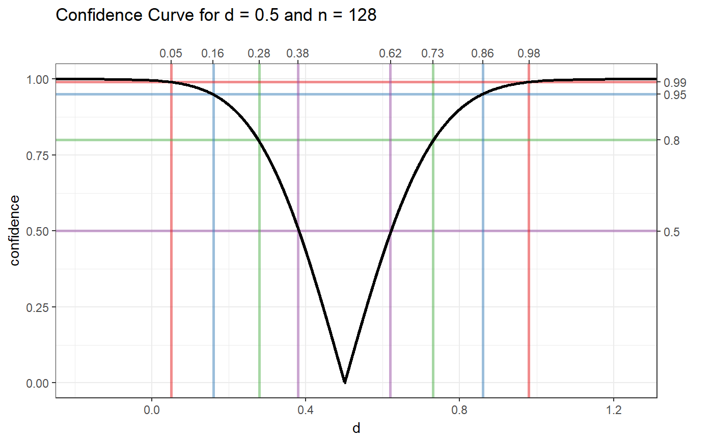
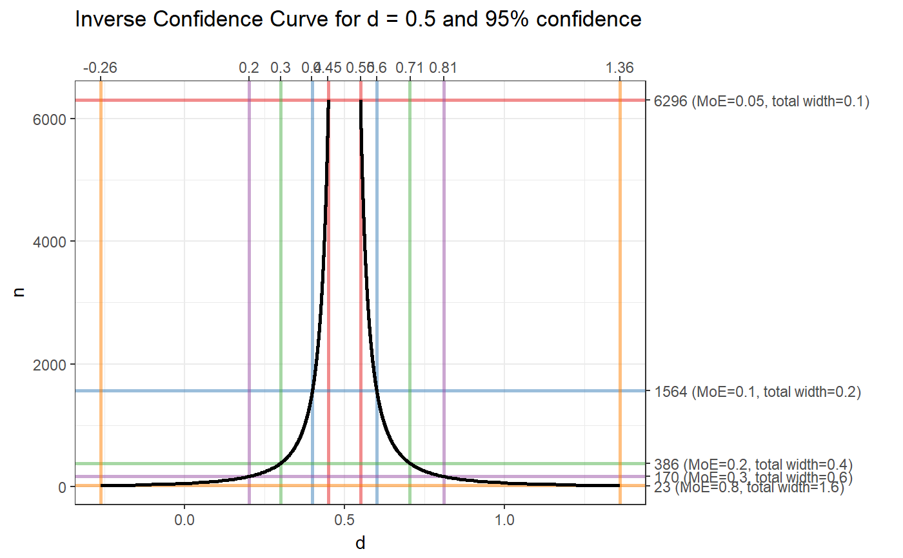

Confidence curves are a way to show the confidence in an estimate computed from sample data. They are useful because they show all confidence levels simultaneously, thereby giving a good sense of the accuracy of the estimate, without forcing the researchers to make a more or less arbitrary choice for one confidence level.
ggConfidenceCurve(metric = "d", value = NULL, n = NULL, conf.level = NULL, wRange = c(0.05, 0.8), curveSize = 1, curveColor = "black", confRange = c(1e-04, 0.9999), confLines = c(0.5, 0.8, 0.95, 0.99), widthLines = c(min(wRange), 0.1, 0.2, 0.3, max(wRange)), lineColor = brewer.pal(9, 'Set1'), lineSize = 1, lineAlpha = .5, xlab = metric, steps = 1000, theme = theme_bw(), gradient=NULL, gradientWidth=.01, outputFile = NULL, outputWidth = 16, outputHeight = 16, ggsaveParams = list(units='cm', dpi=300, type="cairo"))
| metric | The metric, currently only 'd' (Cohen's d) and 'r' (Pearson's r) are implemented. |
|---|---|
| value | The value for which to create the confidence curve plot. |
| n | The sample size for which to create the confidence curve plot. If |
| conf.level | The confidence level for which to create the confidence curve plot. If |
| wRange | The range of 'half-widths', or margins of error, to plot in the confidence curve plot if no sample size is specified (if |
| curveSize | The line size of the confidence curve line. |
| curveColor | The color of the confidence curve line. |
| confRange | The range of confidence levels to plot. |
| confLines, widthLines | If a traditional confidence curve is generated, lines can be added to indicate the metric values corresponding to the lower and upper confidence interval bounds. For an inverse confidence curve, lines can be added to inficate the metric values and sample sizes corresponding to specific margins of error (or 'half-widths'). |
| lineColor | If confidence or 'interval width lines' lines are added (see |
| lineSize | If confidence lines or 'interval width lines' are added (see |
| lineAlpha | The alpha value (transparency) of the confidence lines or 'interval width lines'. |
| xlab | The label on the x axis. |
| steps | The number of steps to use when generating the data for the confidence curves' more steps yield prettier, smoother curves, but take more time. |
| theme | The |
| gradient | Whether to use a gradient as background to make the confidence more explicit. This is experimental and pretty influential in terms of how the plot looks. The default gradient, used when passing |
| gradientWidth | If using a gradient, the width of the |
| outputFile | A file to which to save the plot. |
| outputWidth, outputHeight | Width and height of saved plot (specified in centimeters by default, see |
| ggsaveParams | Parameters to pass to ggsave when saving the plot. |
A ggplot2 plot.
Bender, R., Berg, G., & Zeeb, H. (2005). Tutorial: Using confidence curves in medical research. Biometrical Journal, 47(2), 237-247. https://doi.org/10.1002/bimj.200410104
Birnbaum, A. (1961). Confidence curves: An omnibus technique for estimation and testing statistical hypotheses. Journal of the American Statistical Association, 56(294), 246-249. https://doi.org/10.1080/01621459.1961.10482107
ggConfidenceCurve(metric='d', value = .5, n = 128);ggConfidenceCurve(metric='d', value = .5, conf.level = .95);